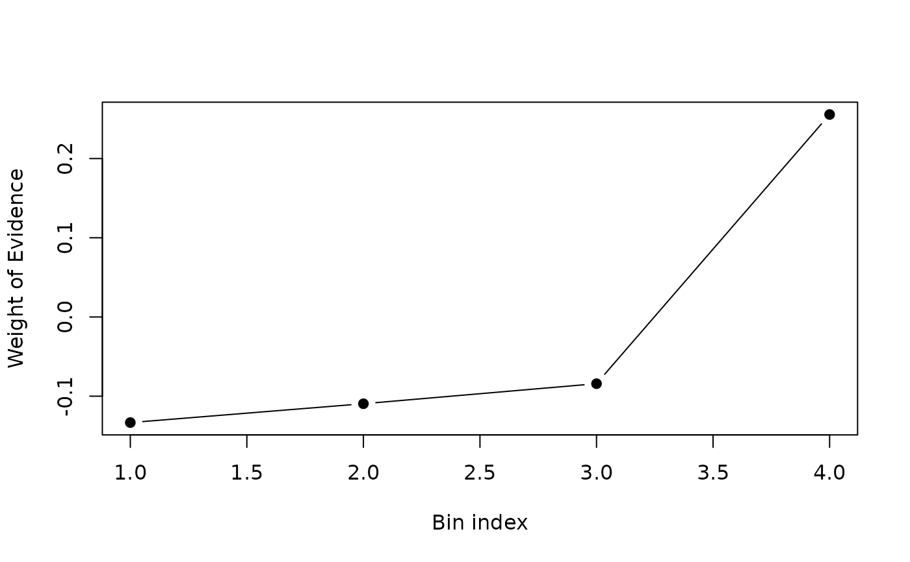

Categorical Optimal Binning with Fisher’s Exact Test
optimal_binning_categorical_fetb.RdPerforms supervised optimal binning of a categorical predictor versus a binary target by iteratively merging the most similar adjacent bins according to Fisher’s Exact Test. The routine returns monotonic Weight of Evidence (WoE) values and the associated Information Value (IV), both key metrics in credit‑scoring, churn prediction and other binary‑response models.
Usage
optimal_binning_categorical_fetb(
target,
feature,
min_bins = 3L,
max_bins = 5L,
bin_cutoff = 0.05,
max_n_prebins = 20L,
convergence_threshold = 1e-06,
max_iterations = 1000L,
bin_separator = "%;%"
)Arguments
- target
integervector of 0/1 values (length \(N\)).- feature
charactervector of categories (length \(N\)).- min_bins
Minimum number of final bins. Default is
3.- max_bins
Maximum number of final bins. Default is
5.- bin_cutoff
Relative frequency threshold below which categories are folded into the rare‑bin (default
0.05).- max_n_prebins
Reserved for future use (ignored internally).
- convergence_threshold
Absolute tolerance for the change in total IV required to declare convergence (default
0.0000001).- max_iterations
Safety cap for merge iterations (default
1000).- bin_separator
String used to concatenate category labels in the output.
Value
A list with components
id– numeric id of each resulting binbin– concatenated category labelswoe,iv– WoE and IV per bincount,count_pos,count_neg– bin countsconverged– logical flagiterations– number of merge iterations
Details
Algorithm outline
Let \(X \in \{\mathcal{C}_1,\dots,\mathcal{C}_K\}\) be a categorical
feature and \(Y\in\{0,1\}\) the target. For each category
\(\mathcal{C}_k\) compute the contingency table
$$
\begin{array}{c|cc}
& Y=1 & Y=0 \\ \hline
X=\mathcal{C}_k & a_k & b_k
\end{array}$$
with \(a_k+b_k=n_k\). Rare categories where
\(n_k < \textrm{cutoff}\times N\) are grouped into a “rare” bin.
The remaining categories start as singleton bins ordered by their WoE:
$$\mathrm{WoE}_k = \log\left(\frac{a_k/T_1}{b_k/T_0}\right)$$
where \(T_1=\sum_k a_k,\; T_0=\sum_k b_k\).
At every iteration the two adjacent bins \(i,i+1\) that maximise the
two‑tail Fisher p‑value
$$p_{i,i+1} = P\!\left(
\begin{array}{c|cc} & Y=1 & Y=0\\\hline
\text{bin }i & a_i & b_i\\
\text{bin }i+1 & a_{i+1}& b_{i+1}
\end{array}
\right)$$
are merged. The process stops when either
\(\#\text{bins}\le\texttt{max\_bins}\) or the
change in global IV,
$$\mathrm{IV}= \sum_{\text{bins}} (\tfrac{a}{T_1}-\tfrac{b}{T_0})
\log\!\left(\tfrac{a\,T_0}{b\,T_1}\right)$$
is below convergence_threshold. After each merge a local
monotonicity enforcement step guarantees
\(\mathrm{WoE}_1\le\cdots\le\mathrm{WoE}_m\) (or the reverse).
Complexity
Counting pass: \(O(N)\) time and \(O(K)\) memory.
Merging loop: worst‑case \(O(B^2)\) time where \(B\le K\) is the initial number of bins; in practice \(B\ll N\) and the loop is very fast.
Overall complexity is \(O(N + B^2)\) time and \(O(K)\) memory.
Statistical background
The use of Fisher’s Exact Test provides an exact
significance measure for 2×2 tables, ensuring the merged bins are those
whose class proportions do not differ significantly. Monotone WoE
facilitates downstream monotonic logistic regression or scorecard
scaling.
References
Fisher, R. A. (1922). On the interpretation of \(X^2\) from contingency
tables, and the calculation of P. Journal of the Royal Statistical
Society, 85, 87‑94.
Hosmer, D. W., & Lemeshow, S. (2000).
Applied Logistic Regression (2nd ed.). Wiley.
Navas‑Palencia, G. (2019).
optbinning: Optimal Binning in Python – documentation v0.19.
Freeman, J. V., & Campbell, M. J. (2007).
The analysis of categorical data: Fisher’s exact test. Significance.
Siddiqi, N. (2012).
Credit Risk Scorecards: Developing and Implementing Intelligent Credit
Scoring. Wiley.
Examples
# \donttest{
## simulated example -------------------------------------------------
set.seed(42)
n <- 1000
target <- rbinom(n, 1, 0.3) # 30 % positives
cats <- LETTERS[1:6]
probs <- c(0.25, 0.20, 0.18, 0.15, 0.12, 0.10)
feature <- sample(cats, n, TRUE, probs) # imbalanced categories
res <- optimal_binning_categorical_fetb(
target, feature,
min_bins = 2, max_bins = 4,
bin_cutoff = 0.02, bin_separator = "|"
)
str(res)
#> List of 9
#> $ id : num [1:4] 1 2 3 4
#> $ bin : chr [1:4] "F|D" "B" "A" "E|C"
#> $ woe : num [1:4] -0.1333 -0.1095 -0.0842 0.2556
#> $ iv : num [1:4] 0.00454 0.00225 0.00182 0.01948
#> $ count : int [1:4] 263 192 261 284
#> $ count_pos : int [1:4] 70 52 72 99
#> $ count_neg : int [1:4] 193 140 189 185
#> $ converged : logi TRUE
#> $ iterations: int 2
## inspect WoE curve
plot(res$woe, type = "b", pch = 19,
xlab = "Bin index", ylab = "Weight of Evidence")

# }